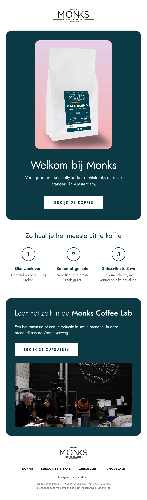
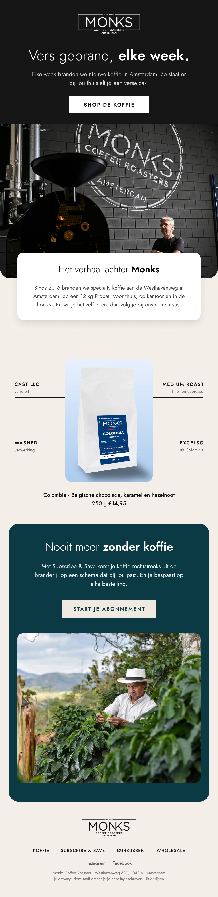

Voorbeelden voor Monks Coffee Roasters
Vers gebrand in Amsterdam, elke week in beeld.
Drie advertenties en twee nieuwsbrieven, gemaakt met jullie eigen foto's en productinformatie. Een idee van Issey Kooijmans van Digital Essence; niets hiervan is gepubliceerd.
Hoi team Monks Coffee Roasters, ik heb dit gemaakt omdat jullie elke week vers branden aan de Westhavenweg, en dat verhaal leent zich goed voor Instagram. Alles is gemaakt met jullie eigen foto's en niets is gepubliceerd. Past het niet, zeg het gerust.
Advertenties · 9:16
Drie invalshoeken om te testen.
Tik op een advertentie om hem groot te bekijken.
Waarom advertenties
Zo groeien koffiemerken op Instagram.
De meeste mensen ontdekken een nieuwe koffiebrander niet via Google, maar tijdens het scrollen. Merken die daar elke week nieuwe advertenties testen, vinden steeds nieuwe kopers en houden hun kosten per aankoop laag. Een vaste nieuwsbrief zorgt dat die kopers terugkomen voor hun volgende zak.
Nieuwsbrief 1 van 2 · Welkomstmail
Welkom bij Monks
Een rustige eerste mail voor nieuwe inschrijvers: wie jullie zijn, hoe je de koffie kiest die bij je past, en een uitnodiging voor de Monks Coffee Lab.
- Elke week vers gebrand op de 12 kg Probat
- Bonen of gemalen, voor filter of espresso
- Subscribe & Save en de cursussen als tweede stap

Nieuwsbrief 2 van 2 · Merkverhaal
Het verhaal achter Monks
Een mail die laat zien waar de koffie vandaan komt: de branderij aan de Westhavenweg, één koffie uitgelicht met herkomst en smaak, en het abonnement als logische volgende stap.
- Branderij en Probat als herkenbaar beeld
- Colombia uitgelicht: Castillo, washed, medium roast
- Afsluiten met Subscribe & Save

Ritme
Zo kan een week eruitzien.
Dit is een voorbeeld, geen vast pakket. De kracht zit in het ritme: regelmatig nieuwe advertenties testen en je nieuwsbrief vast versturen. Wat werkt, doen we vaker.
- MaNieuwe advertenties liveVerschillende invalshoeken tegelijk testen.
- DiMeekijkenWat pakt de doelgroep op, wat niet?
- WoBijsturenBudget naar wat werkt, de rest eruit.
- DoNieuwsbrief verstuurdVast moment, zodat lezers erop gaan rekenen.
- VrKorte updateWat werkte en wat we volgende week doen.
Benieuwd hoe dit voor Monks Coffee Roasters werkt?
Een kwartiertje bellen is genoeg om te kijken of het past. Geen verplichtingen.